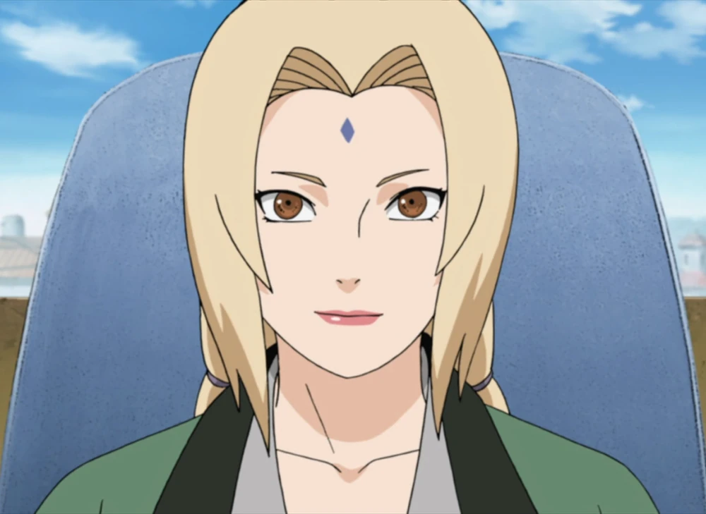

Shanenade Senju
Hidden Leaf Village, Fire Country
Phone: (555) 987-6543
Email: ladytsunade@email.com
LinkedIn: www.linkedin.com/in/tsunade-senju
Objective:
Experienced medical ninja and former Hokage with a passion for healing and protecting the village.
Seeking opportunities
to continue my work as a medical ninja and contribute to the well-being of the Hidden Leaf Village.
Professional Experience:
Former Hokage | Hidden Leaf Village | 5th Hokage Term: Ongoing
- Led the Hidden Leaf Village as its 5th Hokage, making strategic decisions and ensuring the
safety of the village.
- Implemented policies to strengthen the village's economy and security, leading to prosperity and
peace.
- Supported and mentored the next generation of ninja, including Naruto Uzumaki and Sakura Haruno.
Legendary Medical Ninja | Ongoing
- Renowned for my medical expertise, including the Strength of a Hundred Seal technique.
- Treated and healed countless ninja and civilians, saving lives during times of crisis.
- Conducted medical research to advance the field of ninja medicine.
Skills:
- Medical Ninjutsu
- Leadership and Strategy
- Expertise in chakra control
- Extensive knowledge of herbal medicine
Education:
Trained by the legendary Hashirama Senju (Clan: Senju)
Certifications:
- Medical Ninjutsu Mastery
- Strength of a Hundred Seal
References:
- Sensei: Hashirama Senju
- Clan: Senju Clan